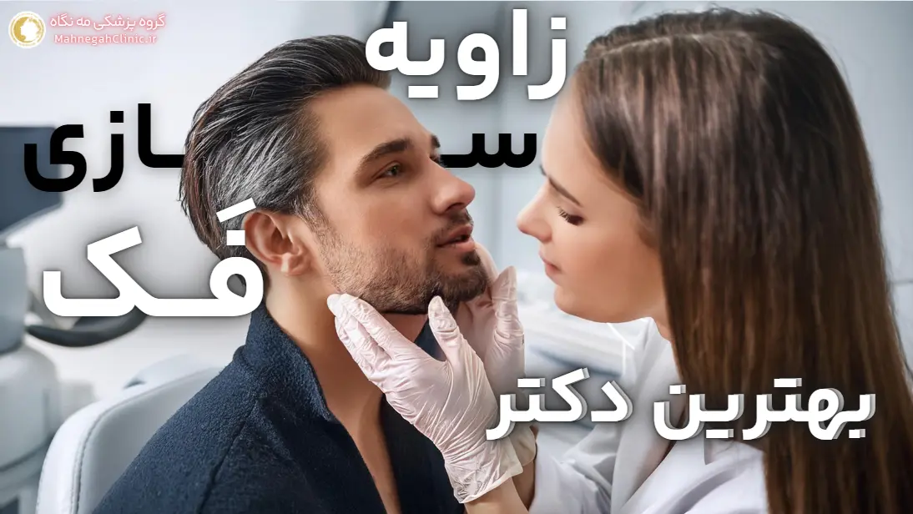
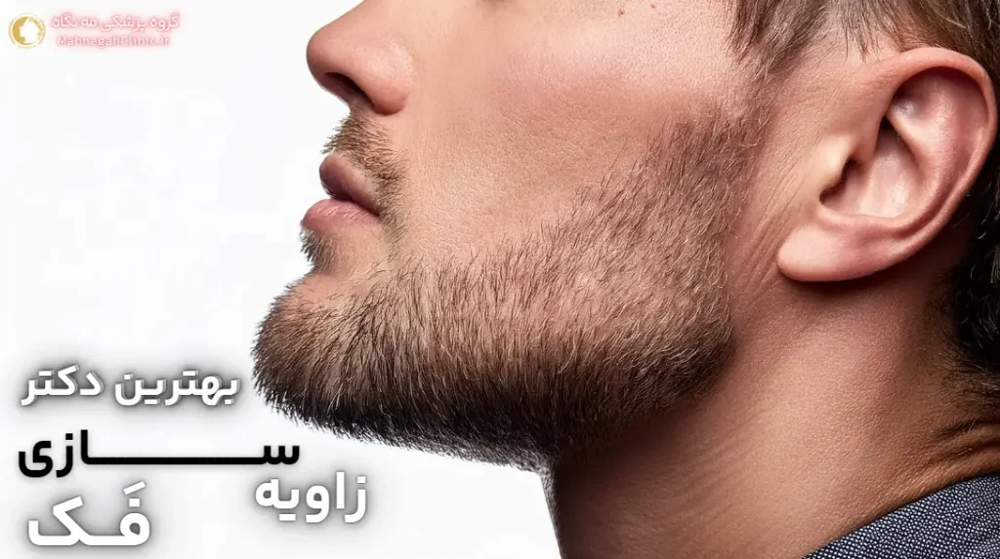
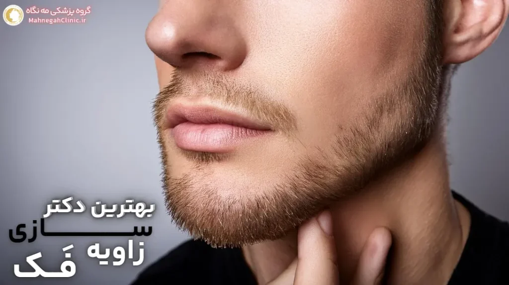

خانه / مجله / زاویه سازی فک
بهترین دکتر زاویه سازی فک + مشاوره رایگان

اهمیت انتخاب بهترین دکتر زاویه سازی فک
انتخاب بهترین دکتر برای زاویه فک، یک تصمیم حیاتی است که میتواند تأثیر بسزایی در نتیجه جراحی، ایمنی و رضایت شما داشته باشد.
این جراحی، اگرچه میتواند به بهبود قابل توجه ظاهر و افزایش اعتماد به نفس منجر شود، اما در صورت عدم انجام صحیح توسط یک متخصص مجرب، ممکن است با عوارض جدی و نتایج نامطلوب همراه باشد.
چرا انتخاب بهترین دکتر برای زاویه سازی صورت مهم است؟
- تضمین ایمنی: یک جراح متخصص و با تجربه، با دانش کامل از آناتومی صورت و فک، میتواند جراحی را با کمترین خطر عوارض و با رعایت استانداردهای ایمنی انجام دهد.
- دستیابی به نتایج طبیعی و زیبا: بهترین دکتر زاویه سازی فک، با در نظر گرفتن ویژگیهای منحصر به فرد صورت شما، روشی را انتخاب میکند که نتایج طبیعی و هماهنگ با سایر اجزای صورت شما ایجاد کند.
- کاهش دوره نقاهت و بهبودی سریعتر: یک جراح ماهر، با تکنیکهای پیشرفته و دقیق، میتواند جراحی را با کمترین آسیب به بافتها انجام دهد که منجر به کاهش دوره نقاهت و بهبودی سریعتر میشود.
- رضایت و اعتماد به نفس: انتخاب بهترین دکتر برای زاویه سازی صورت، به شما اطمینان خاطر میدهد که در دستان یک متخصص هستید و میتوانید با اعتماد به نفس به جراحی خود بپردازید.
عوارض انتخاب نادرست پزشک
انتخاب یک پزشک غیرمجرب یا نامناسب برای جراحی زاویه فک میتواند عواقب جدی و جبرانناپذیری داشته باشد، از جمله:
- نتایج نامطلوب و غیرطبیعی: عدم مهارت جراح میتواند منجر به نتایج نامتقارن، بیش از حد برجسته یا غیرطبیعی شود که ممکن است نیاز به جراحیهای ترمیمی داشته باشد.
- آسیب به اعصاب و بافتهای صورت: یک جراح غیرمجرب ممکن است به اعصاب یا بافتهای صورت آسیب برساند که میتواند باعث بیحسی، فلج عضلات یا سایر عوارض جدی شود.
- عفونت و مشکلات بهبودی: عدم رعایت استانداردهای بهداشتی و مراقبتهای ناکافی پس از جراحی میتواند منجر به عفونت، خونریزی یا مشکلات دیگر در روند بهبودی شود.
- نارضایتی و کاهش اعتماد به نفس: نتایج نامطلوب جراحی میتواند باعث نارضایتی و کاهش اعتماد به نفس شود و تأثیر منفی بر کیفیت زندگی فرد بگذارد.
بنابراین، انتخاب «بهترین دکتر زاویه سازی فک» یک تصمیم حیاتی است که نباید آن را سرسری گرفت. با تحقیق و بررسی دقیق، میتوانید جراحی موفقی داشته باشید و از نتایج آن برای سالها لذت ببرید.
ویژگیهای بهترین دکتر برای زاویه سازی صورت
انتخاب بهترین دکتر برای زاویه سازی صورت، نیازمند توجه به ویژگیها و معیارهای خاصی است که تضمین کنندهی یک تجربه موفق و رضایتبخش خواهد بود. در ادامه به برخی از مهمترین ویژگیهای یک دکتر خوب برای زاویه سازی صورت اشاره میکنیم:
تخصص و تجربه
- تخصص در جراحی پلاستیک صورت و فک: بهترین دکتر زاویه سازی صورت باید دارای تخصص و گواهینامه معتبر در جراحی پلاستیک صورت و فک باشد. این تخصص نشاندهندهی دانش و مهارت او در انجام این نوع جراحیهاست.
- تجربه کافی در جراحی زاویه فک: تجربه عملی جراح در انجام جراحیهای زاویه فک بسیار مهم است. یک جراح با تجربه، با چالشها و پیچیدگیهای این جراحی آشناست و میتواند بهترین نتایج را برای شما به ارمغان آورد.
- آشنایی با روشهای مختلف زاویه سازی فک: بهترین دکتر باید با روشهای مختلف زاویه سازی فک، از جمله تزریق فیلر، جراحی ایمپلنت و استئوتومی آشنا باشد و بتواند بهترین روش را با توجه به نیازها و شرایط شما پیشنهاد دهد.
- با توجه به این مطلب از جامعه جراحان پلاستیک آمریکا، این عمل در دسته بندی عمل های زیبایی قرار میگیرد.
مهارت و دانش بهروز
- مهارتهای جراحی پیشرفته: یک جراح ماهر، با استفاده از تکنیکهای پیشرفته و دقیق، میتواند جراحی را با کمترین آسیب به بافتها و عوارض جانبی انجام دهد.
- دانش بهروز: بهترین دکتر زاویه سازی صورت همواره در حال بهروزرسانی دانش و مهارتهای خود در زمینه جراحیهای زیبایی و تکنولوژیهای جدید است.
- رویکرد هنری و زیباییشناختی: یک جراح خوب علاوه بر مهارتهای فنی، باید دارای حس زیباییشناختی قوی باشد تا بتواند نتایج طبیعی و هماهنگ با سایر اجزای صورت شما ایجاد کند.
- توانایی برقراری ارتباط موثر: بهترین دکتر باید بتواند به خوبی با شما ارتباط برقرار کند، به سوالات شما پاسخ دهد و انتظارات شما را درک کند.
- صداقت و شفافیت: یک جراح خوب باید در مورد مزایا، معایب، خطرات و هزینههای جراحی با شما صادق و شفاف باشد و به شما کمک کند تا تصمیمی آگاهانه بگیرید.
با توجه به این ویژگیها، میتوانید بهترین دکتر برای زاویه سازی صورت خود را انتخاب کنید و با اطمینان به او، به زیبایی و اعتماد به نفس بیشتری دست یابید.

چگونه بهترین دکتر زاویه فک در شهر خود را پیدا کنیم؟
یافتن بهترین دکتر برای زاویه سازی فک، نیازمند تحقیق و بررسی دقیق است. در این مسیر، میتوانید از روشهای زیر استفاده کنید:
تحقیق و بررسی آنلاین
- جستجوی آنلاین: با استفاده از موتورهای جستجو مانند گوگل، میتوانید بهترین دکترهای زاویه سازی فک در شهر خود را پیدا کنید. از کلمات کلیدی مانند "بهترین دکتر زاویه سازی فک در [شهر]"، "دکتر خوب برای زاویه سازی صورت در [شهر]" یا "متخصص جراحی فک و صورت در [شهر]" استفاده کنید.
- بررسی وبسایتها و پروفایلهای آنلاین: وبسایتها و پروفایلهای آنلاین پزشکان را بررسی کنید تا با تخصص، تجربه، مدارک تحصیلی، نمونه کارها و نظرات بیماران آنها آشنا شوید.
- مطالعه مقالات و وبلاگها: مقالات و وبلاگهای مرتبط با زاویه سازی فک را مطالعه کنید تا با روشهای مختلف، مزایا، معایب و نکات مهم این جراحی آشنا شوید و بتوانید سوالات بهتری از پزشکان بپرسید.
- استفاده از شبکههای اجتماعی: در شبکههای اجتماعی مانند اینستاگرام، میتوانید صفحات پزشکان را دنبال کنید و با نمونه کارها و فعالیتهای آنها آشنا شوید. همچنین، میتوانید از طریق شبکههای اجتماعی با بیماران قبلی ارتباط برقرار کنید و نظرات و تجربیات آنها را جویا شوید.
- همچنین مراجعه به وبسایت معتبر کلینیک میزو سنگاپور میتواند مرجع مناسبی برای شما باشد.
مشاوره با پزشکان مختلف
- رزرو نوبت مشاوره: پس از تحقیق و بررسی آنلاین، با چند پزشک مختلف نوبت مشاوره بگیرید. در جلسه مشاوره، میتوانید سوالات خود را بپرسید، انتظارات خود را بیان کنید و با پزشک و محیط کلینیک آشنا شوید.
- ارزیابی و معاینه: در جلسه مشاوره، پزشک شما را معاینه میکند و در مورد سابقه پزشکی شما سوال میپرسد. همچنین، ممکن است از عکسها و تصویربرداریهای سهبعدی برای ارزیابی دقیق آناتومی صورت شما استفاده کند.
- طرح درمان و هزینهها: پزشک بر اساس نیازها و اهداف شما، یک طرح درمان شخصیسازی شده ارائه میدهد و هزینههای مربوط به جراحی را توضیح میدهد.
- احساس راحتی و اعتماد: در انتخاب پزشک، به احساس راحتی و اعتماد خود نیز توجه کنید. اطمینان حاصل کنید که میتوانید به راحتی با پزشک خود ارتباط برقرار کنید و سوالات خود را بپرسید.
- خوانده مقاله چگونه بهترین دکتر زاویه فک را در شهر خود پیدا کنیم میتواند برایتان بسیار مفید باشد.
با انجام تحقیقات کامل و مشاوره با چند پزشک مختلف، میتوانید بهترین دکتر زاویه سازی فک در شهر خود را پیدا کنید و با اطمینان به او، به زیبایی و اعتماد به نفس بیشتری دست یابید.
سوالاتی که باید از بهترین دکتر زاویه سازی فک بپرسید
جلسه مشاوره با پزشک، فرصتی عالی برای کسب اطلاعات بیشتر در مورد جراحی زاویه فک و اطمینان از انتخاب بهترین دکتر برای خودتان است.
در این جلسه، میتوانید سوالات خود را بپرسید، نگرانیهای خود را مطرح کنید و انتظارات خود را بیان کنید. در ادامه، به برخی از مهمترین سوالاتی که باید از بهترین دکتر زاویه سازی فک بپرسید، اشاره میکنیم:
سوالات مربوط به تخصص و تجربه پزشک
- آیا شما دارای تخصص و گواهینامه معتبر در جراحی پلاستیک صورت و فک هستید؟
- چند سال تجربه در انجام جراحیهای زاویه فک دارید؟
- آیا میتوانید نمونه کارهای خود را در زمینه جراحی زاویه فک به من نشان دهید؟
- آیا میتوانید مرا با برخی از بیماران قبلی خود که جراحی زاویه فک انجام دادهاند، ارتباط دهید؟
- آیا عضو انجمنها یا سازمانهای حرفهای مرتبط با جراحی پلاستیک صورت هستید؟
سوالات مربوط به روش درمانی و مراقبتهای پس از آن
- کدام روش زاویه سازی فک برای من مناسبتر است؟ (تزریق فیلر، جراحی ایمپلنت، استئوتومی یا ...)
- مزایا و معایب هر روش چیست؟
- خطرات و عوارض جانبی احتمالی این جراحی چیست؟
- دوره نقاهت و بهبودی چقدر طول میکشد؟
- چه مراقبتهایی را باید پس از جراحی انجام دهم؟
- چه مدت طول میکشد تا به فعالیتهای عادی خود بازگردم؟
- آیا نتایج جراحی دائمی هستند؟
- اگر از نتایج جراحی راضی نباشم، چه گزینههایی دارم؟
علاوه بر این سوالات، میتوانید هر گونه نگرانی یا سوال دیگری که در مورد جراحی زاویه فک دارید را با پزشک خود در میان بگذارید. یک جراح خوب باید با صبر و حوصله به سوالات شما پاسخ دهد و شما را در تصمیمگیری آگاهانه یاری کند.
در گروه پزشکی مه نگاه، ما به اهمیت مشاوره و ارتباط موثر با بیماران اعتقاد داریم. پزشکان ما با صبر و حوصله به تمام سوالات شما پاسخ میدهند و شما را در تمام مراحل جراحی همراهی میکنند.
بررسی نمونه کارهای دکتر خوب برای زاویه سازی صورت
یکی از مهمترین مراحل انتخاب بهترین دکتر برای زاویه سازی فک، بررسی نمونه کارهای اوست. این کار به شما کمک میکند تا با سبک و مهارت جراح آشنا شوید و ببینید آیا نتایج کار او با انتظارات شما همخوانی دارد یا خیر.
در ادامه به اهمیت مشاهده نمونه کارها و نکاتی که باید در بررسی آنها در نظر بگیرید، میپردازیم.
اهمیت مشاهده نمونه کارهای قبل و بعد
- ارزیابی مهارت و تخصص جراح: نمونه کارها نشان میدهند که جراح چگونه با چالشهای مختلف جراحی زاویه فک روبرو شده و چه نتایجی را برای بیماران خود به ارمغان آورده است.
- درک سبک و رویکرد جراح: هر جراح دارای سبک و رویکرد منحصر به فردی در جراحی است. با مشاهده نمونه کارها، میتوانید ببینید که آیا سبک جراح با سلیقه و انتظارات شما همخوانی دارد یا خیر.
- تصمیمگیری آگاهانه: مشاهده نمونه کارها به شما کمک میکند تا تصویری واقعبینانه از نتایج احتمالی جراحی برای خودتان داشته باشید و بتوانید تصمیم آگاهانهتری بگیرید.
- افزایش اعتماد به نفس: مشاهده نمونه کارهای موفق میتواند به شما اعتماد به نفس بیشتری برای انجام جراحی بدهد و نگرانیهای شما را کاهش دهد.
توجه به نتایج طبیعی و متناسب با چهره
- طبیعی بودن نتایج: بهترین دکتر زاویه سازی صورت، نتایجی طبیعی و هماهنگ با سایر اجزای صورت ایجاد میکند. از انتخاب جراحی که نتایج کار او بیش از حد مصنوعی یا اغراقآمیز است، خودداری کنید.
- تناسب با چهره: نتایج جراحی باید با ویژگیهای منحصر به فرد صورت شما متناسب باشد و زیبایی طبیعی شما را برجسته کند.
- تقارن: یک جراح خوب باید بتواند تقارن را در چهره شما حفظ کند یا بهبود بخشد.
- رضایت بیماران: به نظرات و بازخورد بیماران در مورد نتایج جراحی توجه کنید. آیا آنها از نتایج خود راضی هستند؟ آیا احساس میکنند که جراحی به بهبود ظاهر و اعتماد به نفس آنها کمک کرده است؟
در گروه پزشکی مه نگاه، ما با افتخار نمونه کارهای متنوعی از جراحیهای زاویه فک را در وبسایت و شبکههای اجتماعی خود به اشتراک میگذاریم. شما میتوانید این نمونه کارها را مشاهده کنید و با سبک و مهارت جراحان ما آشنا شوید. همچنین، میتوانید در جلسه مشاوره، نمونه کارهای بیشتری را مشاهده کنید و سوالات خود را در مورد آنها بپرسید.

هزینه زاویه سازی فک پیش بهترین دکتر
هزینه زاویه سازی فک یکی از مهمترین عواملی است که در تصمیمگیری افراد برای انجام این جراحی زیبایی تأثیرگذار است. هزینهها میتوانند بسته به عوامل مختلفی متغیر باشند و انتخاب بهترین دکتر برای زاویه سازی فک نیز میتواند بر هزینهها تأثیر بگذارد.
عوامل موثر بر هزینه
- روش انتخابی: هزینه جراحی زاویه فک به روش مورد استفاده بستگی دارد. به طور کلی، روشهای جراحی مانند ایمپلنت و استئوتومی هزینه بیشتری نسبت به روشهای غیرجراحی مانند تزریق فیلر و بوتاکس دارند.
- تجربه و تخصص جراح: پزشکان با تجربه و مهارت بالا معمولاً هزینه بیشتری دریافت میکنند، اما این هزینه میتواند تضمین کننده نتایج بهتر و کاهش خطرات جراحی باشد.
- موقعیت جغرافیایی کلینیک: هزینهها در مناطق مختلف و شهرهای بزرگ ممکن است متفاوت باشد. کلینیکهای واقع در مناطق مرفه یا شهرهای بزرگ ممکن است هزینههای بالاتری داشته باشند.
- مواد و تجهیزات مورد استفاده: کیفیت و برند مواد مورد استفاده در جراحی (مانند ایمپلنتها یا فیلرها) و همچنین تکنولوژیهای پیشرفته مورد استفاده در کلینیک، میتوانند بر هزینهها تأثیر بگذارند.
- خدمات اضافی: برخی کلینیکها ممکن است خدمات اضافی مانند مشاوره، مراقبتهای پس از جراحی، داروها و غیره را در هزینه کلی جراحی لحاظ کنند.
مقایسه هزینهها و انتخاب بهترین گزینه
قبل از تصمیمگیری نهایی، بهتر است با چند پزشک مختلف مشاوره کنید و هزینهها و خدمات ارائه شده توسط آنها را مقایسه کنید.
به یاد داشته باشید که هزینه نباید تنها عامل تعیینکننده در انتخاب پزشک باشد. تخصص، تجربه، مهارت و رضایت بیماران قبلی نیز از اهمیت بالایی برخوردارند.
در گروه پزشکی مه نگاه، ما به ارائه خدمات با کیفیت بالا با قیمتهای رقابتی و منصفانه متعهد هستیم. ما معتقدیم که زیبایی و اعتماد به نفس حق همه است و نباید با هزینههای گزاف همراه باشد.
برای اطلاع از هزینه دقیق زاویه سازی فک در مجموعه ما و بهرهمندی از تخفیفات ویژه، کافیست فرم زیر 👇 را پر کنید تا کارشناسان ما در اسرع وقت با شما تماس بگیرند و اطلاعات لازم را در اختیارتان قرار دهند.
نظرات بیماران در مورد بهترین دکتر برای زاویه سازی صورت
نظرات و تجربیات بیماران قبلی، یکی از منابع ارزشمند برای ارزیابی مهارت، تخصص و اخلاق حرفهای یک دکتر زاویه سازی صورت است.
این نظرات میتوانند به شما کمک کنند تا تصویری واقعیتر از آنچه که میتوانید از پزشک و کلینیک انتظار داشته باشید، به دست آورید و در نهایت، انتخاب آگاهانهتری داشته باشید.
جستجوی نظرات و تجربیات بیماران قبلی
- وبسایت و شبکههای اجتماعی پزشک: بسیاری از پزشکان، نظرات بیماران خود را در وبسایت یا صفحات شبکههای اجتماعی خود منتشر میکنند. این نظرات را با دقت بخوانید و به نکاتی مانند رضایت بیماران از نتایج جراحی، رفتار پزشک و کادر درمانی، و همچنین محیط کلینیک توجه کنید.
- سایتها و انجمنهای آنلاین: سایتها و انجمنهای آنلاین متعددی وجود دارند که بیماران در آنها تجربیات خود را از جراحیهای زیبایی، از جمله زاویه سازی فک، به اشتراک میگذارند. این سایتها میتوانند منبع خوبی برای یافتن نظرات بیطرفانه و صادقانه بیماران باشند.
- مشاوره با بیماران قبلی: اگر امکان دارد، با برخی از بیماران قبلی پزشک تماس بگیرید و در مورد تجربیات آنها از جراحی، نتایج، مراقبتهای پس از جراحی و رضایت کلی آنها سوال کنید.
اهمیت انتخاب پزشکی با رضایت بالای بیماران
- تضمین کیفیت: نظرات مثبت بیماران قبلی نشاندهندهی کیفیت بالای خدمات ارائه شده توسط پزشک و رضایت آنها از نتایج جراحی است.
- افزایش اعتماد: خواندن تجربیات مثبت دیگران میتواند به شما اعتماد به نفس بیشتری برای انجام جراحی بدهد و نگرانیهای شما را کاهش دهد.
- انتخاب آگاهانه: با آگاهی از تجربیات بیماران قبلی، میتوانید تصمیمی آگاهانهتر در مورد انتخاب پزشک بگیرید و از انتخاب خود پشیمان نشوید.
مشاوره رایگان با بهترین دکتر زاویه فک در تهران
انتخاب بهترین دکتر برای زاویه سازی فک، یک تصمیم مهم و شخصی است. مشاوره رایگان با پزشک، فرصتی عالی برای کسب اطلاعات بیشتر، رفع نگرانیها و تصمیمگیری آگاهانه در مورد این جراحی زیبایی است.
رزرو نوبت مشاوره و طرح سوالات خود
- تماس با دکتر: با گروه پزشکی مورد نظر (مه نگاه 😊) تماس بگیرید و نوبت مشاوره رایگان با بهترین دکتر زاویه سازی فک تهران را رزرو کنید.
- آمادهسازی سوالات: قبل از جلسه مشاوره، لیستی از سوالات خود را تهیه کنید. این سوالات میتوانند در مورد تخصص و تجربه پزشک، روشهای درمانی، هزینهها، مراقبتهای پس از جراحی و هر موضوع دیگری که برای شما مهم است، باشند.
- معاینه و ارزیابی: در جلسه مشاوره، پزشک شما را معاینه میکند و در مورد سابقه پزشکی و اهداف زیبایی شما سوال میپرسد. همچنین، ممکن است از عکسها و تصویربرداریهای سهبعدی برای ارزیابی دقیق آناتومی صورت شما استفاده کند.
- طرح درمان شخصیسازی شده: بر اساس نیازها و اهداف شما، پزشک یک طرح درمان شخصیسازی شده ارائه میدهد و در مورد جزئیات جراحی، مزایا، معایب و خطرات آن با شما صحبت میکند.
- پاسخ به سوالات و نگرانیها: در طول مشاوره، میتوانید تمام سوالات و نگرانیهای خود را با پزشک در میان بگذارید و از او بخواهید تا آنها را به طور کامل و شفاف پاسخ دهد.
تصمیمگیری آگاهانه پس از مشاوره
- مقایسه گزینهها: اگر با چند پزشک مختلف مشاوره کردهاید، گزینههای خود را مقایسه کنید و بهترین پزشک را برای خود انتخاب کنید.
- احساس راحتی و اعتماد: اطمینان حاصل کنید که با پزشک خود احساس راحتی میکنید و به او اعتماد دارید. ارتباط موثر و اعتماد متقابل بین پزشک و بیمار برای یک جراحی موفق بسیار مهم است.
- تصمیمگیری نهایی: پس از بررسی تمام جوانب و کسب اطلاعات کافی، میتوانید تصمیم نهایی خود را در مورد انجام جراحی زاویه فک بگیرید.
- سوالاتی که باید از دکتر خود بپرسید.
در گروه پزشکی مه نگاه، ما به اهمیت مشاوره رایگان و ارتباط موثر با بیماران اعتقاد داریم. پزشکان ما با صبر و حوصله به تمام سوالات شما پاسخ میدهند و شما را در تمام مراحل جراحی همراهی میکنند. برای رزرو نوبت مشاوره رایگان و شروع مسیر خود به سوی زیبایی و اعتماد به نفس بیشتر، همین حالا با ما تماس بگیرید.